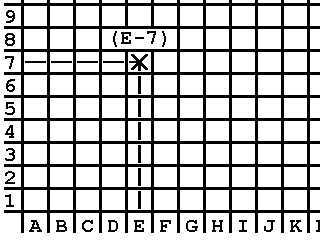
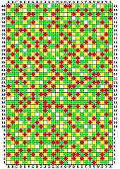

|
|
PetSpeed 64 Manual. By Lee Davison. |
|
| C O N T E N T S | C O N T E N T S | ||||||
|---|---|---|---|---|---|---|---|
| Copyright Notice & Disclaimer | -- | 1 | Extra programming facilities | -- | 6 | ||
| Hardware Requirements | -- | 1 | Errors | -- | 8 | ||
| Product Description | -- | 1 | Compile time errors | -- | 8 | ||
| Diskette Care | -- | 1 | Run time errors | -- | 8 | ||
| Introduction | -- | 2 | The ERRORS utility program | -- | 8 | ||
| Preparing Petspeed for Use | -- | 2 | Interfacing Petspeed and Machine code | -- | 9 | ||
| Running Petspeed | -- | 3 | The Memory Map | -- | 9 | ||
| 3Dimensional Arrays | -- | 4 | Accessing Variables | -- | 9 | ||
| Compatibility with BASIC 2.0 | -- | 5 | Variable Formats | -- | 10 | ||
| Facilities not available | -- | 5 | |||||
DisclaimerPetspeed 64 is copyrighted and all rights to it are reserved by SYSTEMS SOFTWARE (OXFORD) LTD. The product is intended for use by the original purchaser only. The purchaser of Petspeed 64 is hereby licensed only to read the software from its medium into the memory of the Commodore 64 computer solely for the purpose of executing it therein. Duplicating, copying (other than for backup purposes), selling or otherwise distributing this product is a violation of the law. It is the policy of the manufacturers to vigorously pursue litigation against all infringements of their copyright. Having said this we hope you will enjoy using Petspeed and that you will find it the useful utility that it is intended to be.
HardwareAlthough Petspeed 64 has been thoroughly tested, no claim is made by the authors or manufacturers concerning the adherence of the software to any particular specification or the suitability of Petspeed 64 for any particular purpose.
Product descriptionIn order to run Petspeed 64 you will need
1 A Commodore 64 computer 2 A Commodore Disk drive
Diskette careThe Petspeed 64 product comprises the following
1 This manual 2 A 5.25 inch floppy diskette (known as the system disk) containing the compiler and associated files. 3 A protection sheet showing a matrix of coloured squares. This sheet is either enclosed in the manual or printed on the front inside cover of the manual.
IntroductionThe method used to protect Petspeed (sorry but we must do this), unlike other protection methods, does at least allow you to make backup copies of the system disk. You are advised to make backups and to keep them in a safe place. All the usual rules apply to the care of the system disk; don't sit on it, don't eat lunch on it and so on.
Preparing PetSpeed for usePetspeed was first released in the early days of Commodore computing and has been implemented on most of the major Commodore machines. Petspeed offers a very high level of compatibility with BASIC 2.0. It has always been and continues to be the BASIC compiler which produces the fastest running compiled programs.
A section of the manual devoted to the technical details of Petspeed compiled programs provides all information needed to interface machine code routines.
Readers of this manual are expected to be familiar with BASIC 2.0 and its resident interpreter. No attempt is made to teach BASIC programming to the novice. The manual only discusses aspects of BASIC which are affected by compilation.
 Running PetSpeedThe system disk supplied with this manual cannot itself be used to compile programs. Before Petspeed can be used it is necessary to create two Master disks, a Petspeed Master and a Utilities Master. When these have been created using the instructions below, they should be backed up (using the program supplied) and thereafter kept, along with the system disk, in a safe place. When further Petspeed or utility disks are required, they should be made from the Masters and not the system disk. The system disk should only be used in the event of the Masters becoming corrupt. To create the Masters, proceed as follows:
1 Format four disks and mark them PETSPEED MASTER, UTILITIES MASTER, PETSPEED WORK and UTILITIES WORK 2 Place the system disk in the disk drive, LOAD"BACKUP",8 and RUN.
The BACKUP program displays five menu options. When one of these is selected the menu will remain on the screen and the selected option will light up in reverse field. When the processing associated with that option terminates, the menu will be restored to standard video.3 From the five menu options displayed, select MAKE PETSPEED MASTER and follow the instructions given in the program. 4 When the menu reappears, select MAKE UTILITIES MASTER and again follow the instructions displayed the system disk may now be put away. 5 Select BACKUP PETSPEED and follow the instructions to make a Petspeed work disk. 6 Select BACKUP UTILITIES and follow the instructions to make a utilities work disk.
Disk spaceBefore using Petspeed it is necessary to follow a brief protection sequence to establish you as an authorised user of the software. We hope that you will not find the protection too tiresome: software does have to be protected and this method does at least allow you to make backup copies of the system disk. Proceed as follows:
1 Save the program to be compiled on the Petspeed WORK disk. 2 Type LOAD"PETSPEED",8 followed by [RETURN] and then RUN.
At this point, Petspeed makes the protection check. On the inside cover of this manual or on a separate sheet, or by clicking on the image on the left, will be found a matrix of coloured squares. Each square can be identified by means of a simple grid reference. For example to find square E-7, identify column E (marked along the bottom of the matrix) and row 7 (marked along the left hand edge). Square E-7 is where column E and row 7 meet. (see fig 1).
The protection check is very simple; all you have to do is correctly identify three squares and enter their colours. Petspeed will give instructions as follows:
WHAT COLOUR IS SQUARE X-XX ?where X-XX is a grid reference. When you have found the square, enter one of the letters W,Y,G or R depending upon whether the square is white, yellow, green or red. When you have correctly answered three such questions the protection check is complete.
3 When requested, enter your disk configuration (by menu selection) and the source program name followed by [RETURN]. The compiler scans the source program four times and as it does so displays the numbers of the lines being processed. When compilation is complete, the screen will clear and the statement RUN: NNNNN bytes free will appear at the top of the screen. The compiled program is now both in memory and saved to disk. To run, simply type the [HOME] key followed by [RETURN]. The compiled program on the work disk has the same name as the original source program but with the characters .WOW appended. It will LOAD and RUN just as a normal BASIC program.
3 Dimensional arraysDuring compilation Petspeed generates several work files. The largest of these, the parse tree, will often run into several hundred blocks and in some cases there will be insufficient space to accommodate it. Whenever the compiler is used the disk should contain only the Petspeed system files and the source program.
Compatibility with BASIC 2.0Petspeed 64 cannot cope directly with 3D arrays. If a program you wish to compile contains 3D arrays you must use the program PRE-SCAN on your Utilities Work disk. PRE-SCAN takes a BASIC source program as input and produces another BASIC program with all 3D arrays converted into 2D arrays. To use PRE-SCAN proceed as follows:
1 Save the program to be converted onto the Utilities Work disk. 2 LOAD"PRE-SCAN" . and RUN. 3 Enter your disk configuration (by menu selection) and then the name of the program to be converted. PRE-SCAN makes two passes through the program. On completion the disk will contain the converted program. The converted program has the same name as the original program but preceded by the slash /. character. This program is suitable for compilation.
ErrorsPetspeed 64 aims for maximum compatibility with BASIC 2.0. There are some trivial differences but these can be allowed for very easily. They fall into two groups: Facilities not available under Petspeed and extra facilities provided by Petspeed.
Facilities not available under Petspeed
1 When a program is overlayed all variables are normally cleared 2 Petspeed needs to know at compile time the dimensions of all arrays. If an array is not dimensioned explicitly in a program it will, as it is in BASIC, be dimensioned to eleven elements times the number of subscripts. If an array is dimensioned however it must be dimensioned with constants. Although this slight restriction may sometimes be a problem, it does give Petspeeded programs the ability to access array elements much more rapidly than would otherwise be possible. Most programs spend a high proportion of their run time accessing array elements and it is a great advantage for a compiler to be able to allocate array space and fix addresses during compilation. For example a statement like
100 DIM A(N)is illegal in Petspeed because the compiler cannot know how much store to reserve. Instead something like the following should be substituted.
100 DIM A(50)If this is not done, the compiler will stop during pass 1 and ask for the dimension as follows:
LINE 100: DIM A(Once the dimension is typed in, compilation will continue.
3 RUN may be used but not with a linenumber as its parameter. LIST, CONT and SAVE are not allowed. Because of the overhead of 35 blocks built into all compiled programs, those which occupy less than about 70 blocks of disk space may become larger when compiled. Programs larger than 70 blocks will usually compile smaller. Because Petspeed saves variables and arrays along with the program, programs will appear larger on the disk than they actually are.
Extra programming facilities
1 User defined string and mixed functions are allowed. Either the function itself or its argument or both may be of either string or numeric type. That is, all the following are possible: DEF FN A(X), DEF FN A$(X), DEF EN A(XS), DEF FN A$(X$)2 Integer FOR loops such as the following are allowed: FOR I%=0 TO 10:. . . . . :NEXT I%There is a slight speed advantage in using integer FOR loops. This is because Petspeed can be sure at compile time that the loop variable will not have a real value assigned to it. The speed advantage is only slight because Petspeed will try to run all FOR loops as integer loops anyway, only converting to floating point if it is forced to do so.
3 In BASIC 2.0, variable, array and function names can be of any length. The interpreter does however only take notice of the first two characters together with any type descriptor (% or $). To maintain compatibility, Petspeed treats names in the same way but provides the option of making all characters significant. The following compiler directive is provided for this purpose. REM !LNThis must appear at the beginning of a program before any variables, arrays or functions are defined.
4 Under Petspeed, the [STOP] key is disabled by default. Two statements are provided to enable and disable the [STOP] key when required; these are as follows: REM !ES enables the [STOP] key.
REM !DS disables the [STOP] key.These are statements and not compiler directives, that is they will be executed at run time. In the following:
10 REM !ES
20 GOSUB 100
30 REM !DS
the subroutine at line 100 will be executed with the [STOP] key enabled.
The REM !DS statement is to be preferred over other methods of disabling the STOP key in that it has no side effects. Programs also run slightly faster with STOP disabled.
5 The # command. BASIC 2.0 provides the command CMD in order to re-direct the 64's standard output to a file. The use of CMD can often speed up file writing as in the following code fragment which writes 101 strings to disk.
10 OPEN 5,8,8,"0:diskfile,s,w"
20 CMD 5
30 FOR I=0 to 100
40 PRINT "testdata"
50 NEXT
60 PRINT#5
70 CLOSE 5
Unfortunately BASIC 2.0 provides no equivalent command to re-direct the 64's standard input. This is the purpose of the # command. The statement:
#Fwhere F is the logical file number of an open read file will cause INPUT or GET to accept input from the file associated with F until the next INPUT#F or GET#F statement is executed. For example, here is a program to read back the data written in the example above:
10 OPEN 5,8,8,"0:diskfile,s,r"
20 #5
30 FOR I=0 to 100
40 INPUT A$:PRINT A$
50 NEXT
60 GET#5,a$
70 CLOSE 5
Run time errorsAll the usual BASIC 2.0 errors may occur during compilation and most of these will cause compilation to abort. The only type of compile time error which will not cause the compiler to abort corresponds to BASIC 2.0's UNDEF'D STATEMENT ERROR. Such errors will be found during pass 4 and, in these circumstances, the linenumbers at which the errors occur will appear in reverse field. A program containing references to undefined statements will run, provided that the statements containing such references are never executed. If this should happen the run will terminate with message:
UNDEF'D STATEMENT ERROR IN XXXXXAn error that may occur at compile time where it would not have done in BASIC 2.0 is FORMULA TOO COMPLEX ERROR. This may happen if the third argument of a MID$ contains function or array references. The problem may be easily solved by replacing the third argument with a variable.
It should be noted that occasionally the line number given in an error report is off by one line, that is, the error actually occurred in the line preceding the one reported.
When compilation is aborted due to a compile time error, certain work files are left on the disk. In order to conserve disk space these may have to be scratched prior to the next compilation.
Interfacing machine code routines to PetSpeedWith the exception of BAD SUBSCRIPT ERROR, Petspeed can produce all the BASIC 2.0 error messages at run time.
All run time errors except UNDEF'D STATEMENT ERROR give a SPEEDCODE address instead of a linenumber. Make a note of this number. In order to locate the corresponding line, it is necessary to use the error locating program ERRORS on the Utilities Work disk. Proceed as follows:
1 Mount the Utilities Work Disk, LOAD"ERRORS",8 and RUN. 2 Select option 1: Copy a .W file
Now mount the Petspeed Work disk containing your program and hit [RETURN]. When requested, replace the Utilities Work disk and hit [RETURN].3 Type RUN again to restart the ERRORS program but this time select option 2: Locate an error.
When requested enter the name of your program and the speedcode address as given in the error report.After a short delay, ERRORS will respond with the BASIC linenumber where the error occurred.
Accessing variablesPetspeed expects a clean Basic program as a source file. If the program to be compiled contains machine code routines, these should be removed before compilation.
Machine language programs which access BASIC 2.0 variables will not work without alteration as Petspeed holds its variables and arrays differently. The following notes provide all the information required for making the necessary changes.
Object programs generated by Petspeed consist of a p-code (Speedcode) optimised version of the source program and a run time interpreter. The full memory map is as follows:
Address or name Pointer ------- ------- +========================+ - TOPMEM $37/$38 | DYNAMIC STRINGS | +------------------------+ - TOPCODE $0824/$0825 | CODE | +------------------------+ - STARTCODE $0822/$0823 | INITIALISATION DATA | +------------------------+ - STARTINIT $0820/$0821 | ARRAYS | +------------------------+ - ARRAYTAB $081E/$081F | DATA STATEMENTS | +------------------------+ - STARTDATA $081C/$081D | VARIABLES | +------------------------+ - $2800 | SPEEDCODE INTERPRETER | +------------------------+ - $0819 | 10 SYS (2073) PETSPEED | +========================+ - $0800 | PAGE ZERO, STACK, | | TAPE BUFFERS, SCREEN, | | ETC. | +------------------------+ - $0000The Speedcode version of a Basic program is usually between 0.5 and 0.65 the size of the original Basic text. To this, however, must be added the 8k overhead of the Speedcode interpreter.
Whereas a BASIC 2.0 program creates its variables and arrays when it is run, a Petspeed program does so at compile time. TOPCODE is the highest address used by the program kept for dynamic strings which are built up from TOPMEM downwards.
The location of each variable and array can be found by running the supplied program REPORT on the Utilities disk. The program asks for the source file name and allows output to be directed to screen or printer. REPORT lists all variables, arrays and user defined functions and gives their addresses. In addition, the locations of the main program segments are supplied. The only address missing from the report is that of TOPCODE (see above) which may easily be determined after compilation.
The diagram below gives the format of all Petspeed data types. Corresponding diagrams illustrating the format of BASIC 2.0 variables are to be found in Commodore's own documentation.
A word of warning is necessary here. Variables and array elements which are not declared as integers using the % sign will not necessarily be held in floating point format. The type of the data in an ordinary real variable or array element may change frequently at run time. The way to transfer values from Petspeed variables to machine code routines is to make them integer explicitly (e.g. A%, PQ%(1O,2) etc). If this is not possible, the machine code routine can if necessary obtain the current type of a variable by looking at the type descriptor (see below). Should the programmer wish to pass a value back to Petspeed via a real/int variable, he may do so by forcing the type descriptor to the value appropriate for the type of data being passed.
Variables Byte offset $00 $01 $02 $03 $04 $05 $06 Floating point exponent mantissa sign $00 Integer unused unused word unused unused $01 Declared integer unused unused word unused unused $05 String unused unused length pointer unused $FF Function unused unused unused pointer unused unused The mantissa and word values are most significant byte first. The pointers in strings and functions are in the more usual low byte first format.
The 32 most frequently accessed variables are treated specially and contain an extra unused byte at the end.
Arrays Byte offset $00 $01 $02 $03 $04 Floating point exponent mantissa Integer $00 unused word unused Declared integer unused unused word unused String unused unused length pointer In floating point arrays the value is stored compressed with the mantissa justified and the sign stored in b7 of the most significant byte.
| Last page update: 3rd February, 2005. | e-mail me
 |